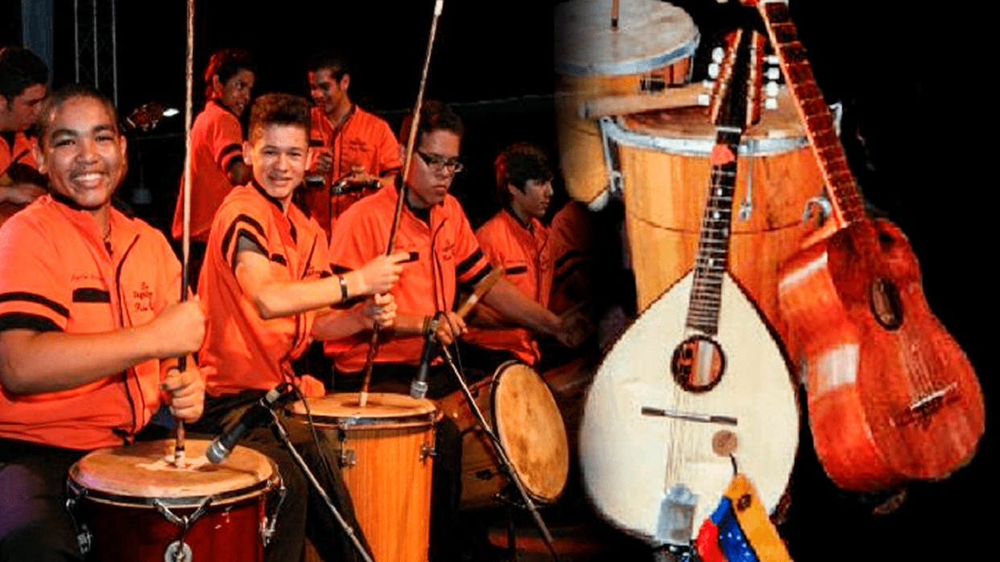
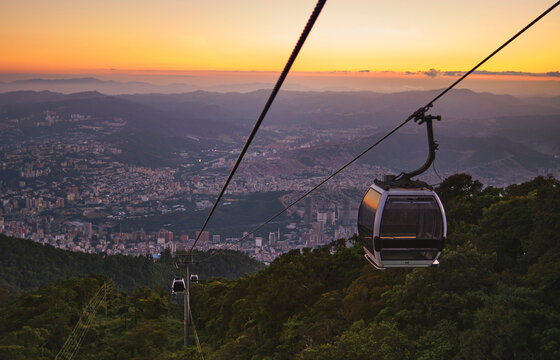
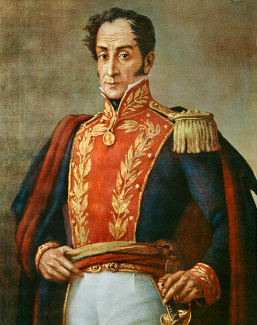
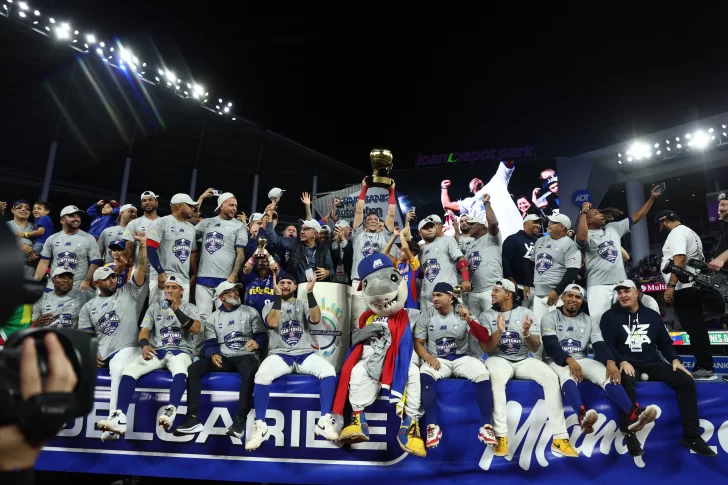
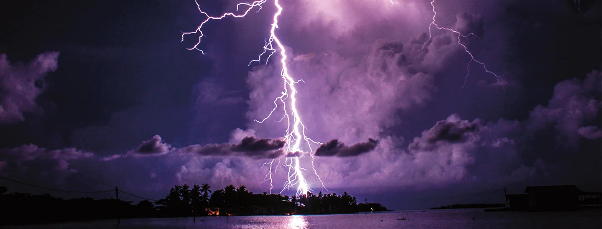

Carolina Herrera

Venezuelan-born Carolina Herrera forged an unparalleled legacy in global fashion, establishing a namesake brand synonymous with timeless elegance and impeccable tailoring that redefined sophisticated dressing for decades.
Fun Fact: She has designed for celebrities and first ladies, including Caroline Kennedy and Michelle Obama.
Gaita Venezolana
Gaita Venezolana is a distinctive musical genre originating from the state of Zulia, Venezuela.
It is an indispensible during the holiday season, its lively rhythm is the holiday soundtrack for Venezuelans.
Ávila National Park
A huge mountain that surrounds three states of Venezuela, between them the capital district and of course Caracas.
Often referred to as the "protective lungs of Caracas" due to its role in regulating the city's climate and providing clean air.
Simon Bolivar
Simon Bolivar spearheaded Venezuela's independence from Spanish colonial rule.
He is known as "The Liberator" for his liberation of several South American nations.
National Sport: Baseball
Baseball is a part of Venezuela's DNA, here people live and breathe the sport.
Since 1939, over 400 Venezuelan baseball players have played in Major League Baseball.
The Everlasting Storm
Lake Maracaibo in Venezuela is renowned as the most lightning-prone place on Earth
The lightning storms above Lake Maracaibo in Venezuela last about 9 hours a day